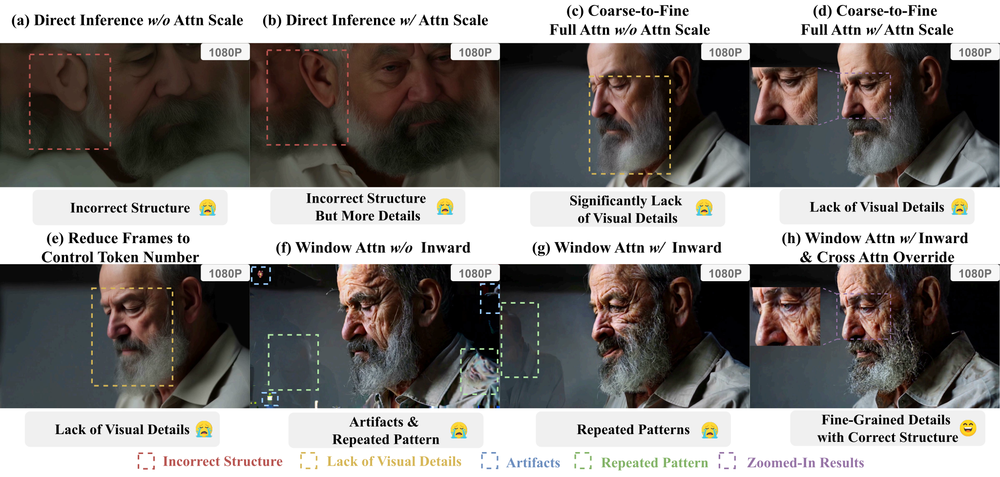
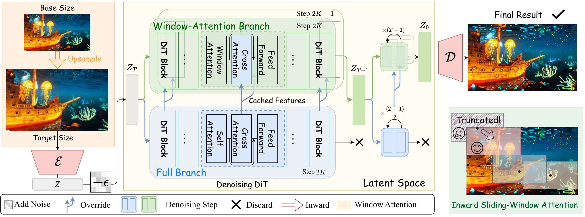

ECCV 2026
FreeSwimRevisiting Sliding-Window Attention Mechanisms for Training-Free Ultra-High-Resolution Video Generation
Let pretrained video Diffusion Transformers swim beyond their native resolution—preserving local detail, global structure, and motion without additional training.
1 School of Artificial Intelligence, Shanghai Jiao Tong University
2 Xi’an Jiaotong-Liverpool University 3 Xi’an Jiaotong University 4 National University of Singapore
01 Generated in motion
Beyond the native window.
One continuous reel of high-resolution generations, from fine natural textures to globally coherent cinematic scenes.
FreeSwim · 1080P / 2K / 4K
Generated with pretrained video DiTs—without high-resolution fine-tuning.
02 Overview
Training-free,
detail-rich.
The quadratic cost of attention makes end-to-end training for ultra-high-resolution video generation prohibitively expensive. FreeSwim instead reuses video Diffusion Transformers at their native scale and extends them to much higher resolutions without additional training or adaptation.
Inward sliding-window attention keeps each token’s receptive field aligned with the scale seen during training. A parallel full-attention branch restores global semantic guidance through cross-attention override, while a feature cache reuses that guidance across denoising steps for efficient generation.
Across modern video DiTs, FreeSwim produces coherent ultra-high-resolution videos with strong fine detail and state-of-the-art VBench performance in a fully training-free setting.
03 Core ideas
Local fidelity.
Global awareness.
FreeSwim coordinates two complementary attention paths, then removes redundant work through feature reuse.
Inward windows
Boundary-aware sliding windows keep every query token’s receptive field consistent with the native training scale.
Preserve local detailGlobal override
A full-attention branch supplies global semantics to the local path, reducing repetition and structural drift.
Restore coherenceFeature cache
Global cross-attention features are refreshed periodically and reused between denoising steps.
Accelerate inference04 Why FreeSwim
Escaping the resolution trade-off.
Global attention preserves structure but misses fine detail. Local windows sharpen details yet risk repetition and semantic inconsistency.

05 Method
Two paths, flowing together.
Local detail and global structure travel through coordinated branches, with cached global features reused for efficient denoising.

Preserve native context
Inward windows align local receptive fields with the model’s training resolution, including at frame boundaries.
Restore global semantics
Full attention guides the local branch through cross-attention override.
Cache and reuse
Global features are reused across steps to avoid redundant 3D attention.
06 Results
High resolution,
no retraining.
FreeSwim scales across Wan2.1 and LTX-Video backbones, improving fine-grained quality while retaining global semantic coherence.
Generation
Ultra-high-resolution synthesis far beyond the native training scale.
VBench
Overall score on Wan2.1-1.3B with cached guidance.
Speedup
Efficient inference through cached global feature reuse.
07 Reference
Swim with us.
If FreeSwim helps your research, please cite the paper.
@misc{wu2025freeswim,
title = {FreeSwim: Revisiting Sliding-Window Attention Mechanisms for Training-Free Ultra-High-Resolution Video Generation},
author = {Yunfeng Wu and Jiayi Song and Zhenxiong Tan and Zihao He and Songhua Liu},
year = {2025},
eprint = {2511.14712},
archivePrefix = {arXiv},
primaryClass = {cs.CV},
url = {https://arxiv.org/abs/2511.14712}
}